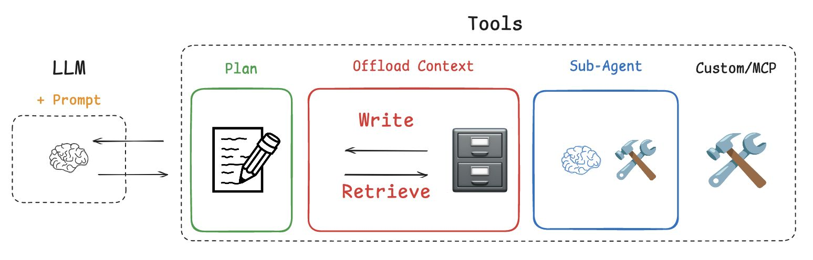

Deep Agents
今天学习了 LangChain Academy 上关于Deep Agents 中的内容。
关于Deep Agents 有四个核心内容。
- Planning
- Offload Context (Filesystem)
- Task Delegation (Sub-agents)
- Careful / Extensive Prompt Engineering

本博客所有文章除特别声明外，均采用 CC BY-NC-SA 4.0 许可协议。转载请注明来源 Mingkai's Blog！